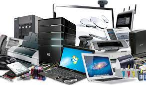

Peralatan elektronik
Peralatan elektronika sering kita jumpai bahkan digunakan dalam keseharian. Misalnya televisi dan komputer. Untuk bisa digunakan sebaik mungkin, peralatan elektronika itu tersusun atas berbagai komponen penting. Adapun komponen yang harus ada dalam peralatan elektronika adalah komponen pasif dan aktif. Contoh komponen pasif adalah resistor dan kapasitor. Sementara itu, contoh komponen aktif pada peralatan elektronika ialah dioda, transistor, dan rangkaian terpadu (integrated circuit). Sebenarnya, apa itu peralatan elektronika?
